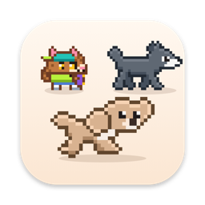

쉬는 중이에요. CPU가 바빠지면 달려요.Resting now. When the CPU gets busy, I run. 캐릭모니터 앱은 맥용이에요. 아이폰에서는 웹 앱으로 친구와 놀 수 있어요.The CharaMonitor app is for the Mac. On iPhone, play with your friend in the web app.
캐릭모니터CharaMonitor
CPU가 바쁠수록 메뉴바의 캐릭터가 더 빨리 달려요. 결제 없는 무료 오픈 소스예요.The busier your CPU, the faster the character in your menu bar runs. Free and open source, no payments.
curl -fsSL https://charamonitor.vercel.app/install.sh | bash
macOS 13+ · Apple silicon · Intel 유니버설 · 무료 · 비영리 오픈소스 · 자동 업데이트macOS 13+ · Apple silicon · Intel universal · free · noncommercial open source · auto‑updates
어떤 걸 할 수 있는지 보기See what it can do태닝 고양이를 잡아서 휙 던져 보세요. 빠를수록 더 신나게 달리고, 한 번 누르면 킥플립을 해요.Grab the tanned cat and toss it. The faster it flies, the happier it runs, and one tap does a kickflip.
설치Install
터미널 한 줄로 설치Install with one line in Terminal 추천Recommended
가장 간단해요. 경고창 없이 바로 설치되고 실행까지 해 줘요.The simplest way. It installs with no warning dialogs and opens the app for you.
curl -fsSL https://charamonitor.vercel.app/install.sh | bash
- ⌘ + Space로 Spotlight를 열고 터미널을 입력해 실행해요.Press ⌘ + Space to open Spotlight, type Terminal and open it.
- 위 명령을 붙여넣고 Enter를 누르면 끝! 응용 프로그램 폴더에 설치되고 메뉴바에 캐릭터가 나타나요.Paste the command above and press Enter. That's it: it lands in Applications and the character shows up in your menu bar.
직접 내려받기Download it yourself
Finder가 편하다면 파일로 받아서 응용 프로그램 폴더로 옮겨 주세요. Finder에서는 앱 이름이 DogMonitor로 보여요.If you prefer Finder, download the file and move the app into Applications. In Finder the app shows up as DogMonitor.
처음 열 때 경고가 뜨면If a warning shows up the first time
macOS 15 이상macOS 15 or later
- 앱을 한 번 열어 봐요. 경고가 뜨면 완료를 눌러 닫아요.Open the app once. When the warning appears, click Done.
- 시스템 설정 > 개인정보 보호 및 보안으로 가요.Go to System Settings > Privacy & Security.
- 아래쪽의 그래도 열기를 누르고 암호를 입력하면 돼요.Near the bottom, click Open Anyway and enter your password.
macOS 13~14macOS 13 to 14
- 응용 프로그램 폴더에서 DogMonitor 앱을 Control 키를 누른 채 클릭해요.In Applications, hold Control and click the DogMonitor app.
- 메뉴에서 열기를 고르고, 한 번 더 열기를 눌러요.Choose Open from the menu, then click Open again.
그래도 안 열리면 터미널에 이 명령을 붙여넣어 주세요.Still won't open? Paste this into Terminal.
xattr -dr com.apple.quarantine /Applications/DogMonitor.app
왜 경고가 뜨나요?Why the warning?
개인이 만든 앱이라 Apple 공증을 받지 않아서 뜨는 안내예요. 앱은 속도 재기, 하루에 한 번 서명된 버전 파일 확인(새 버전이 있으면 업데이트 받기), 자동 다듬기(이 맥에 ChatGPT로 로그인된 Codex가 있을 때만, 설정에서 끌 수 있어요), 직접 켠 기능(날씨 창문, 내 AI, 메일 계정) 말고는 인터넷에 연결하지 않아요. 소스 코드가 공개돼 있어서 직접 확인하고 빌드할 수도 있어요.It's a notice for apps made by an individual that aren't notarized by Apple. The app only goes online to test your speed, to check a small signed version file once a day (and fetch an update when there is one), for auto touch-up (only when this Mac has Codex signed in with ChatGPT; you can turn it off in Settings), and for features you turn on yourself (weather window, your own AI, mail accounts). The source code is public, so you can read it and build it yourself.
아이폰에서 쓰기 (웹 앱)On iPhone (web app) 무료Free
설치 없이 사파리에서 열고 홈 화면에 추가하면 앱처럼 써요. 인터넷이 없어도 돌아가고, 아무것도 밖으로 보내지 않아요.No install: open it in Safari and add it to your Home Screen to use it like an app. It works offline and sends nothing out.
- 아이폰 카메라로 QR 코드를 비추거나 아래 버튼을 눌러 사파리에서 열어요.Point your iPhone camera at the QR code, or tap the button below to open it in Safari.
- 공유 버튼을 누르고 홈 화면에 추가를 골라요.Tap Share and choose Add to Home Screen.
- 톡 누르면 반응하고, 꾹 누르면 쓰다듬고, 끌어서 던질 수도 있어요. 별 줍기, 두더지잡기, 집중 타이머도 있어요.Tap and it reacts, press and hold to pet it, drag to toss it. There's star catching, whack-a-mole and a focus timer too.
맥에서 내 설정 내보내기로 만든 파일을 웹 앱에서 가져오면 내 캐릭터도 아이폰에서 만날 수 있어요. 파일은 그 기기 안에서만 읽어요. 받은 설정 파일이 있다면 내 설정 받기.Import the file you made with Export my setup on your Mac and your own character comes to iPhone too. The file is read only on that device. Got a shared setup? Get my setup.
조용하고 가벼워요Quiet and light
인터넷에는 언제 연결하나요?When does it go online?
혼자서는 거의 인터넷에 연결하지 않아요 (속도 재기 버튼을 누를 때 Cloudflare 속도 서버에, 자동 다듬기가 빈 모습을 그릴 때 이 맥의 ChatGPT(Codex)를 거쳐 OpenAI에 사진을, 켜 둔 기능(날씨 창문, 내 AI, 메일 계정)이 필요할 때 그곳에, 그리고 앱을 켤 때와 하루에 한 번 이 사이트에서 서명된 작은 버전 파일과 후원 친구 소개 목록만 받고 새 버전이 있을 때만 업데이트를 받아요). 계정, 결제, 추적, 분석 도구가 없어요. 개인정보 처리방침On its own it barely goes online: to Cloudflare's speed test servers when you press the speed test button; a photo to OpenAI through this Mac's ChatGPT (Codex) when auto touch-up draws missing poses; to the services behind features you turned on (weather window, your own AI, mail accounts); and, at launch and once a day, it fetches a small signed version file and the sponsor friend list from this site, downloading an update only when there's a new version. No accounts, payments, tracking or analytics. Privacy policy
이런 걸 해요What it does
기능 소개 전체All features사용법How to use
- 메뉴바의 캐릭터를 클릭하면 대시보드가 열려요.Click the character in the menu bar to open the dashboard.
- 캐릭터 선택에서 캐릭터를 고르고, 꾸미기에서 고른 캐릭터에 맞게 색과 모양을 바꿔 보세요.Pick a character in Choose character, then change its colors and look in Customize.
- 클리너를 누르면 꺼도 되는 앱과 지울 파일을 골라 두고, 정리하기 한 번이면 정리돼요.Cleaner picks out apps you can quit and files you can delete, and one Clean up does the rest.
- 설정에서 로그인 시 자동 실행을 켜 두면 맥을 켤 때마다 캐릭터가 함께 나와요.Turn on Open at login in Settings and the character comes along every time you start your Mac.
- 종료한 뒤 다시 켜려면 ⌘ + Space로 Spotlight를 열고 캐릭을 검색하거나, 응용 프로그램 폴더에서 캐릭모니터를 열어요.To open it again after quitting, press ⌘ + Space and search for CharaMonitor, or open it from Applications.
삭제하기Uninstall
메뉴바의 캐릭터를 오른쪽 클릭해 종료한 뒤, 응용 프로그램 폴더의 캐릭모니터 앱을 휴지통으로 옮기면 돼요. 예전 버전을 터미널로 설치했다면 홈 폴더 > 응용 프로그램(~/Applications)에 있을 수도 있어요.Right-click the character in the menu bar to quit, then move the app from Applications to the Trash. If you installed an older version with Terminal, it may be in Home > Applications (~/Applications).
터미널로 한 번에 지우려면 아래 명령을 쓰세요. 두 곳 모두 찾아서 지우고 설정도 정리해 줘요.To remove it in one go from Terminal, use this command. It looks in both places and clears the settings too.
curl -fsSL https://charamonitor.vercel.app/install.sh | bash -s -- --uninstall
무료 · 오픈 소스Free · open source
무료 오픈 소스예요. 결제는 없어요. 가끔 오는 후원 친구(제작자 서비스 소개)는 설정에서 끌 수 있고, 꾸미기 선물 8가지는 후원 친구를 끝까지 보면 하나씩 열려요 (앱스토어판은 처음부터 다 열려 있어요). 후원·광고 문의Free and open source, with no payments. The occasional sponsor friend (introducing the maker's services) can be turned off in Settings, and the 8 dress-up gifts unlock one at a time when you watch a sponsor friend to the end (the App Store version has them all unlocked). Sponsorship inquiries
- 소스 코드는 GitHub에 있어요. Xcode 명령줄 도구만 있으면
swift build로 직접 빌드할 수 있어요.The source code is on GitHub. With the Xcode command line tools you can build it yourself withswift build. - 라이선스는 PolyForm Noncommercial 1.0.0이에요. 개인적·비영리 목적이면 쓰고, 고치고, 나눌 수 있어요. 돈을 받고 팔거나 상업적으로 쓰는 건 안 돼요.The license is PolyForm Noncommercial 1.0.0. For personal and noncommercial use you can use, change and share it. Selling it or using it commercially is not allowed.
- 앱에 들어 있는 캐릭터는 모두 오리지널이에요. 내 사진이나 내 그림 파일로 나만의 캐릭터와 캐릭터 팩을 만들 수 있어요(팩 만드는 법은 저장소의
docs/PACKS.md). 직접 권리를 가진 이미지를 사용해 주세요.Every character in the app is an original. You can make your own characters and character packs from your photos or drawings (how to make a pack:docs/PACKS.mdin the repository). Please use images you have the rights to.